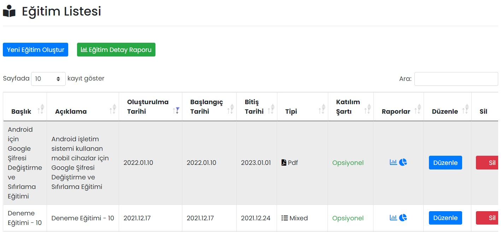

Eğitimler
Yeni bir eğitim girmek ya da oluşturulmuş eğitimlerin görüntülenebileceği ekrandır.
Eğitimler Derslerden, Dersler Testlerden, Testler ise Sorulardan oluşur. Bir eğitim içerisine birden çok ders,test ve soru eklenebilir.
Eğitim Listesi
Oluşturulmuş eğitimler burada gösterilir, düzenlenir ya da silinir.

Raporlar
Eğitimler için 2 çeşit raporlama bulunur.
1. Katılımcı Bazlı Eğitim Raporu
Eğitime katılan kullanıcılar, başarı durumları ve puanları gibi raporların görüntülenebileceği ekrandır.
2. Eğitim Grafik Özet Raporları
Eğitimin genel ve ders bazlı raporlarının grafik olarak görüntülenebileceği ekrandır.
Düzenle
İlgili eğitimin düzenlenebileceği ekrandır. Sayfadaki özellikler için bkz: Eğitim Tanımla
Sil
İlgili eğitimin silinmesini sağlar. Tıklanması halinde onay penceresi görünür.
Yeni Eğitim Oluştur
Eğitim Tanımla
| Özellik | Açıklama |
|---|---|
| Bildirim Gönderme Durumu | Açık olması halinde; eğitim yayınlandığı anda, katılımcılar listesinde seçilmiş kişilere bildirim gönderilir. |
| Başlık | - |
| Kısa Açıklama | - |
| Aktifleştirme Durumu | Aktif olması durumunda eğitim görünür, Pasif olması durumunda görünmez. |
| Eğitim Tipi Seçiniz | PDF, PowerPoint, video ya da mixed olarak seçilebilir. Seçeneğe göre eğitimin ikonu değişecektir. |
| Katılım Şartı | Kullanıcılara, bu eğitimin opsiyonel ya da zorunlu olduğu belirtilebilir. |
| Sertifika Verilme Durumu | |
| Sertifika URL Adresi | |
| Eğitim Görseli | Eğitim listesinde gösterilecek görseldir. |
| Eğitim Başlangıç Tarihi | Eğitim bu tarihten sonra görünür olur. |
| Eğitim Bitiş Tarihi | Eğitim bu tarihten sonra görünmez. |
Katılımcılar listesinden, eğitime katılması istenen grup ya da kişiler seçilir.
Eğitim Detay Raporu
Tüm derslerin detaylı raporları burada görüntülenir. Rapor Excel/PDF olarak indirilebilir ya da yazdırılabilir.